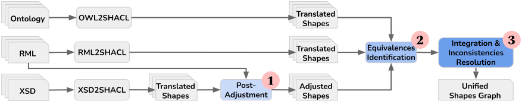

SCOOP all the Constraints’ Flavours for your Knowledge Graph
Creating SHACL shapes for the validation of RDF graphs is a non-trivial endeavor. Current shapes extraction systems often overlook the constraints imposed by individual artifacts, although RDF graphs are often constructed by applying ontology terms to heterogeneous data. Only a few systems extract SHACL shapes from either the data schema or the ontology, leading, in either case, to limited or incomplete constraints.
Thus, we propose SCOOP, a framework that exploits all artifacts associated with the construction of an RDF graph: data SChemas, OntOlogies, and maPpings. SCOOP integrates the SHACL shapes extracted from each artifact into a unified shapes graph.
This website provides descriptions and resources related to SCOOP. To cite this work, see Publications.
SCOOP

SCOOP comprises three modules: (i) post-adjustment to align schema-driven shapes with the target RDF graph; (ii) equivalences identification to align shapes from diverse sources, and (iii) integration and inconsistencies resolution to prevent unsatisfiable shapes.
SCOOP Source Code
The code and usage instructions for SCOOP are available online on the GitHub repository.
Access: https://github.com/dtai-kg/SCOOP
SCOOP-UI Demo
The SCOOP UI allows user to extract SHACL shapes in just one click.
Access: https://demos.citius.usc.es/scoop/
Demo video: https://demos.citius.usc.es/scoop/video
Tools
SCOOP is as an open-source system which incorporates RML2SHACL, Astrea, and XSD2SHACL to integrate shapes from mappings in RML, ontologies in OWL, and raw data schemas in XSD.
RML2SHACL
RML2SHACL is a tool to generate SHACL shapes from RML mapping files for RDF graphs validation.
Access: https://github.com/RMLio/RML2SHACL
Astrea
Astrea is a tool to generate SHACL shapes from one or more given OWL ontologies.
Access: https://github.com/oeg-upm/astrea
XSD2SHACL
XSD2SHACL is a tool to generate SHACL shapes from XML Schema Definition files.
Use Cases
SCOOP is evaluated on the real-world use case RINF, the railway infrastructure register published by each country, containing the infrastructure parameters applied to the railway system. RINF includes:
XML raw data
XML raw data from 30 countries.
RML files
28 RML files.
Access: The mapping rules will be publicly available soon by ERA https://www.era.europa.eu/.
XSD files
Access: https://www.era.europa.eu/domains/registers/rinf_en
Ontologies files
Access: https://github.com/Interoperable-data/ERA_vocabulary
SHACL shapes
Publications
Xuemin Duan, David Chaves-Fraga, Olivier Derom, and Anastasia Dimou. 2024. SCOOP all the Constraints’ Flavours for your Knowledge Graph. Proceedings of the 21th Extended Semantic Web Conference (ESWC)
Xuemin Duan, David Chaves-Fraga, and Anastasia Dimou. 2023. XSD2SHACL: Capturing RDF Constraints from XML Schema. In Knowledge Capture Conference 2023 (K-CAP '23), December 05--07, 2023, Pensacola, FL, USA. ACM, New York, NY, USA 9 Pages. https://doi.org/10.1145/3587259.3627565
Xuemin Duan, David Chaves-Fraga, and Anastasia Dimou. 2024. SCOOP-UI: SHACL Shape Extraction in Just a Click!. Proceedings of the 21th Extended Semantic Web Conference (ESWC)